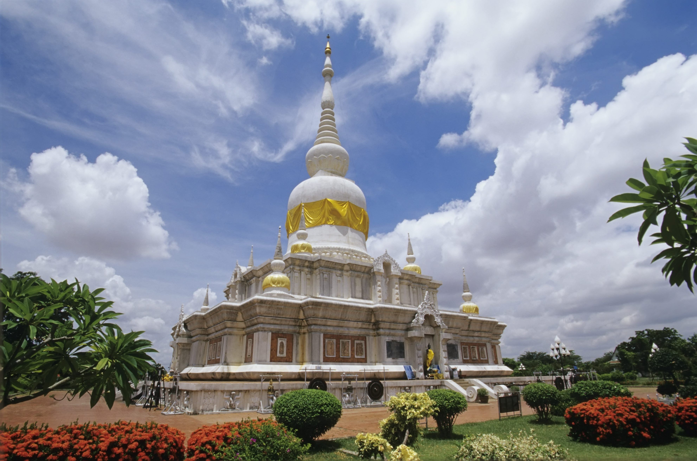
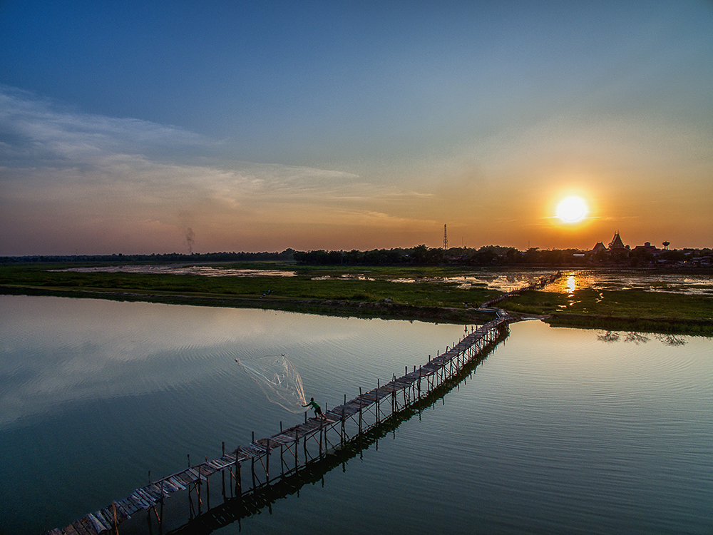
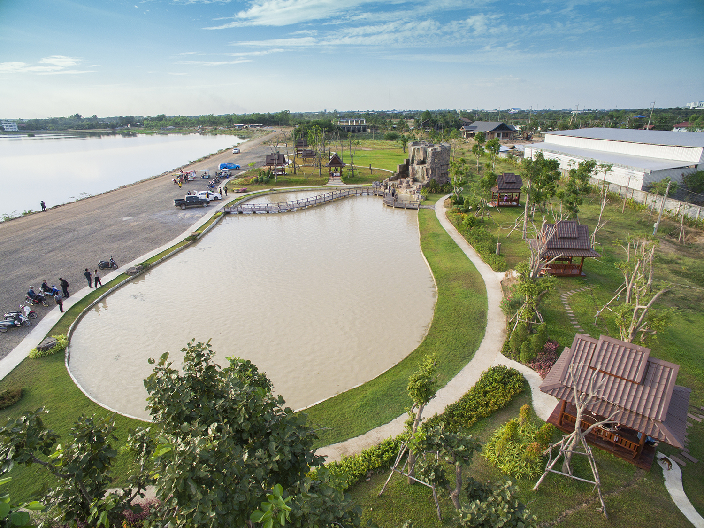
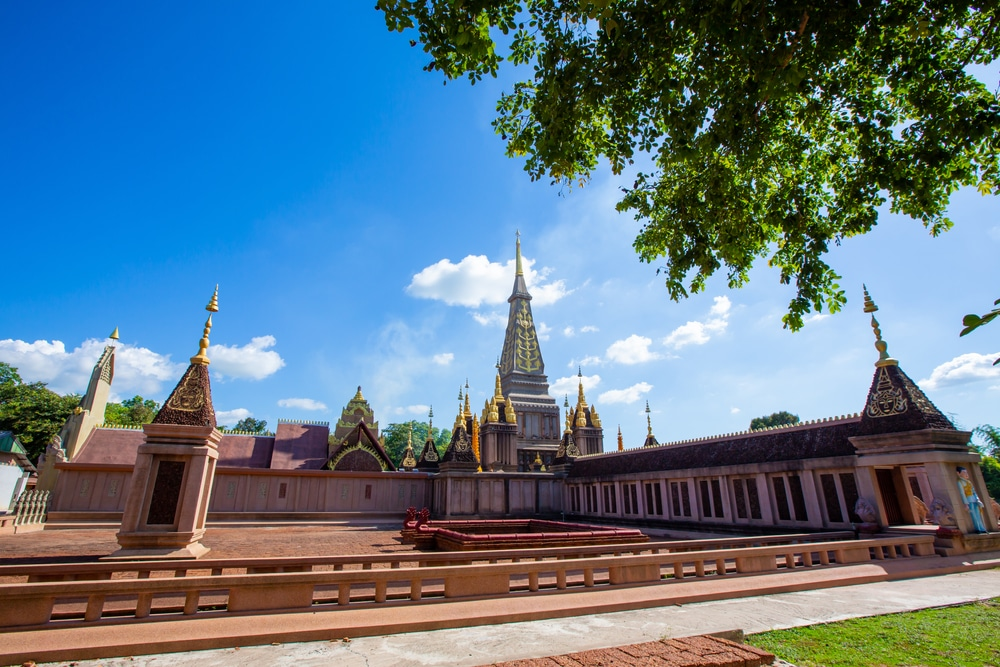
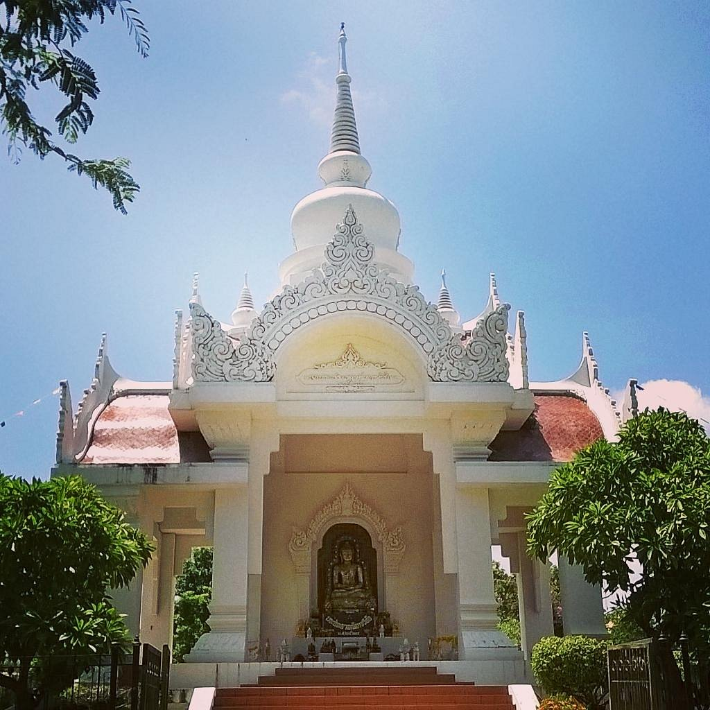
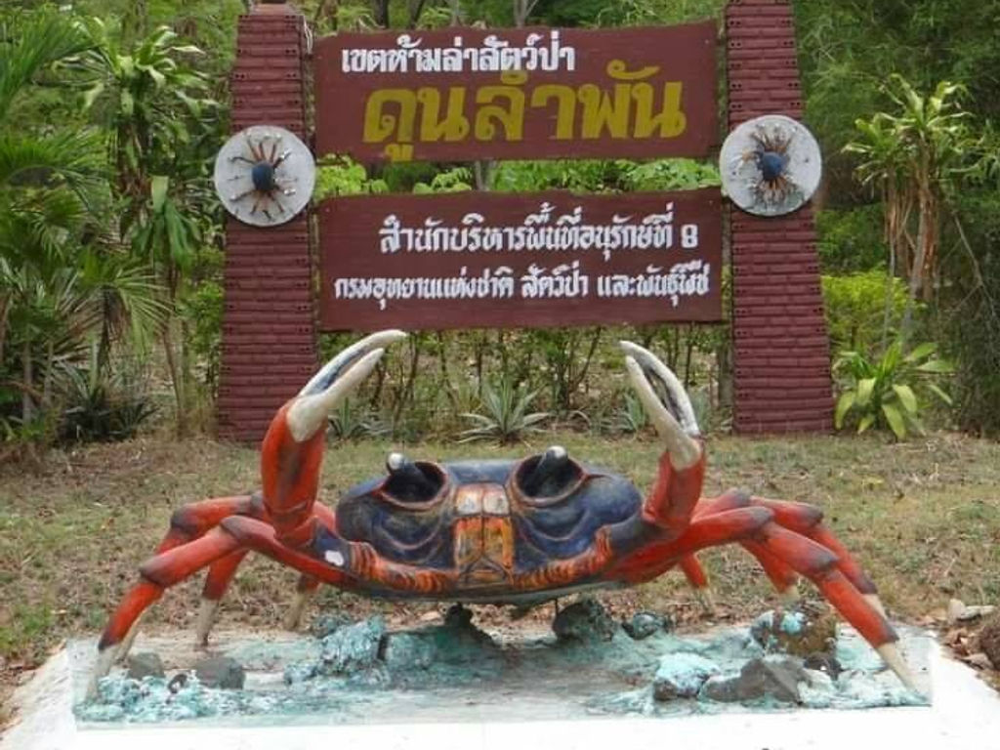

1.พระบรมธาตุนาดูน

ภาพจาก : อีสานร้อยแปด
พระบรมธาตุนาดูนถือเป็นปูชนียสถานที่สำคัญและศักดิ์สิทธิของชาวจังหวัดมหาสารคาม อีกทั้งบริเวณนี้เคยเป็นที่ตั้งของ นครจำปาศรี มาก่อน จึงมีการขุดค้นพบโบราณวัตถุต่างๆ มากมาย ซึ่งนำไปจัดแสดงไว้ที่ พิพิธภัณฑสถานแห่งชาติจังหวัดขอนแก่น
ข้อมูลเพิ่มเติม
ที่อยู่ : ตำบลพระธาตุ อำเภอนาดูน จังหวัดมหาสารคาม
เวลาเปิด-ปิด : 06.00-18.00 น.
โทร : 0-4379-7129
2.วนอุทยานโกสัมพี
ภาพจาก : มหาสารคาม
วนอุทยานโกสัมพี กรมป่าไม้ได้ประกาศจัดตั้งเป็นวนอุทยานตามข้อเสนอของจังหวัดมหาสารคาม เดิมชาวมหาสารคามเรียกป่าแห่งนี้ว่า บุ่งลิง เพราะภูมิประเทศเป็นหนองน้ำและป่าไม้ตามธรรมชาติที่มีบรรยากาศร่มรื่น เป็นที่อาศัยของนกนานาชนิดและฝูงลิงนับพันตัว โดยเฉพาะ ลิงแสมสีทอง
ซึ่งเป็นลิงชนิดหายได้ยากรวมอยู่ด้วย
ข้อมูลเพิ่มเติม
ที่อยู่ : ตำบลหัวขวาง อำเภอโกสุมพิสัย จังหวัดมหาสารคาม
เวลาเปิด-ปิด : 08.00-18.00 น.
โทร : -
3.วัดพุทธนาราม(วัดป่าวังน้ำเย็น)
ภาพจาก : thai.tourismthailand.org/Attraction
วัดป่าวังน้ำเย็นคือเจดีย์ศรีมหาสารคาม องค์เจดีย์ที่มีขนาดใหญ่สีทองงดงาม มองเห็นสวยเด่นแต่ไกล รวมถึงศาลาการเปรียญไม้ขนาดใหญ่ที่สุดในประเทศซึ่งใช้เสาไม้ถึง 112 ต้น ภายในวัดยังเป็นที่ประดิษฐานพระพุทธรูปทรงเครื่องที่สร้างจากทองคำบริสุทธิ์ 3 องค์ น้ำหนักกว่า 12 กิโลกรัม
ข้อมูลเพิ่มเติม
ที่อยู่ : ตำบลเกิ้ง อำเภอเมือง จังหวัดมหาสารคาม
เวลาเปิด-ปิด : 08.00-18.00 น.
โทร : 08-5145-5942
4.พระพุทธมิ่งเมือง วัดสุวรรณาวาส
ภาพจาก : thailandtourismdirectory.go.th
หลวงพ่อพระยืน (วัดสุวรรณาวาส) สิ่งศักดิ์สิทธิ์คู่บ้านคู่เมืองและเป็นปูชนียวัตถุ ที่ควรแก่กาสักการะเคารพบูชายิ่ง ชาวบ้านนิยมเรียกกัน ว่า " หลวงพ่อพระยืน " เป็นพระพุทธรูปที่ศักดิ์สิทธิ์ยิ่งเป็นมิ่งขวัญเป็นที่พึ่งพาทางใจของชาวพุทธ ทุกถ้วนหน้าโดยเฉพาะ ชาวกันทรวิชัย จังหวัดมหาสารคาม และเป็นที่เคารพบูชาของพุทธศาสนิกชนทั่วไปพระพุทธรูปทั้งสององค์นี้ เป็นปรางสรงน้ำ มีความสูงตลอดองค์ประมาณ 8 ศอก กว้าง 2 ศอก พระเนตรและเนื้อองค์พระ สร้างด้วยศิลาแลงอย่างดี เป็นพระพุทธรูปที่นิยมสร้างในสมัยขอมก่อนยุคสุโขทัย
ข้อมูลเพิ่มเติม
ที่อยู่: ตำบลโคกพระ อำเภอกันทรวิชัย จังหวัดมหาสารคาม
เวลาเปิด-ปิด: 08.00-18.00 น.
โทร: -
5.สะพานไม้แกดำ

ภาพจาก :thailandtourismdirectory.go.th/attraction
สะพานไม้แกดำ ถูกคัดเลือกให้เป็นสะพานไม้ที่มีความสวยงามเป็นอันดับ3 ของประเทศไทย โดยสะพานแห่งนี้ถูกสร้างขึ้นโดยชาวบ้าน คลองนี้ดั้งเดิมกว้างเพียง 20 เมตร ชาวบ้านจึงไปมาหาสู่กันไม่ยากนักโดยใช้เรืออีโปงที่ทำจากขอนตาลและสร้างสะพานเล็กๆไว้เดินข้าม ต่อมารัฐบาลได้ขุดคลองชลประทาน คลองจึงมีขนาดที่กว้างขึ้น ชาวบ้านจึงช่วยกันระดมหาไม้มาสร้างสะพาน จนเป็นสะพานไม้แกดำที่สวยงามนี่เอง
ข้อมูลเพิ่มเติม
ที่อยู่: ตำบลแกดำ อำเภอแกดำ จังหวัดมหาสารคาม
เวลาเปิด-ปิด: 06.00-18.00 น.
โทร: -
6.แก่งเลิงจาน

ภาพจาก : thailandtourismdirectory.go.th/attraction
บริเวณสันอ่างเก็บน้ำจัดทำเป็นสวนสาธารณะที่สวยงาม มีสวนดอกไม้และน้ำตกเทียม ศาลาพักร้อน ในช่วงฤดูหนาวมีแปลงดอกไม้ขนาดใหญ่ นักท่องเที่ยวสามารถเที่ยวชมสวนไปพร้อมๆกับการชมพระอาทิตย์ตกที่แก่งเลิงจานได้ในเวลาเดียวกัน และมีสถานีประมง ทำการเพาะพันธุ์ปลาน้ำจืดให้หลายจังหวัดทางภาคตะวันออกเฉียงเหนือ
ข้อมูลเพิ่มเติม
ที่อยู่: ตำบลเลิงจาน อำเภอเมือง จังหวัดมหาสารคาม
เวลาเปิด-ปิด: 06.00-19.00 น.
โทร: -
7.พระธาตุอินทร์แปลง

ภาพจาก : th.trip.com
องค์พระธาตุอินทร์แปลนั้นได้แรงบรรดาลใจมาจากองค์พระธาตุพนม ส่วนยอดนั้นจำลองมาจากพระธาตุนาดูน ด้านวิหารคดและการวางภูมิทัศน์ได้ใช้หลักแบบขอม โดยมีการสร้างบ่อน้ำไว้ทั้งสี่ทิศของพระธาตุ รายละเอียดของลวดลายและงานปูนปั้นเป็นศิลปะแบบบาหลี แปลกตาสวยงามดั่งพระอินทร์สร้างจึงเป็นที่มาของชื่อสถานที่แห่งนี้
ข้อมูลเพิ่มเติม
ที่อยู่: ตำบลเม็กดำ อำเภอพยัคฆภูมิพิสัย จังหวัดมหาสารคาม
เวลาเปิด-ปิด: 08.00-18.00 น.
โทร: -
8.ศาลหลักเมืองมหาสารคาม

ภาพจาก : Abbas A
ศาลหลักเมืองมหาสารคามถูกสร้างขึ้นในปี พ.ศ. 2408 โดยในสมัยท้าวมหาชัย (กวด) เจ้าเมืองมหาสารคามคนแรก ได้รวบรวมไพร่พลจากร้อยเอ็ดมาตั้งเมืองใหม่ และ ได้ตั้ง กองบัญชาการชั่วคราว อยู่บนเนินสูงแห่งหนึ่งแล้วสร้างศาลเจ้าพ่อหลักเมืองขึ้น เป็นสิ่งศักดิ์สิทธิ์คู่บ้านคู่เมืองมีลักษณะเป็นอาคารจัตุรมุข มีทางขึ้นทั้งสี่ทิศเสาหลักเมืองทำด้วยไม้ชัยพฤกษ์ (ไม้คูณหรือแก่นคูณ) แกะสลักลงรักปิดทองอย่างสวยงาม
ข้อมูลเพิ่มเติม
ที่อยู่: ตำบลลาด อำเภอเมือง จังหวัดมหาสารคาม
เวลาเปิด-ปิด: 06.00-18.00 น.
โทร: -
9.วัดหนองหูลิง
ภาพจาก : thai.tourismthailand.org
ก่อตั้งมาตั้งแต่ปี พ.ศ.2476 มีสิ่งสำคัญในวัด ได้แก่ "อุโบสถรูปทรงเรืออนันตนาคราช" เป็นอุโบสถที่มีรูปทรงแตกต่างไป จากอุโบสถ วัดอื่นในมหาสารคาม ออกแบบโดยพระครูบวรธรรมปคุณ (นิวัฒน์ จักกวโร) เจ้าคณะตำบลมิตรภาพ เขต 1 ดำรงตำแหน่ง เจ้าอาวาสวัดหนองหูลิง ตั้งแต่ปี พ.ศ.2536 เพื่อเป็นกุศโลบายให้ประชาชนและนักท่องเที่ยวที่สัญจรผ่านมาเข้ามาชมอุโบสถ ทรงแปลกตา รูปเรืออนันตนาคราช โดยทุกส่วนของอุโบสถจะแฝงไว้ด้วยปริศนาธรรม อาทิ
ข้อมูลเพิ่มเติม
ที่อยู่: ตำบลมิตรภาพ อำเภอแกดำ จังหวัดมหาสารคาม
เวลาเปิด-ปิด: 08.00-18.00 น.
โทร: -
10.เขตห้ามล่าสัตว์ป่าดูนอำพัน

ภาพจาก : เพจเขตห้ามล่าสัตว์ป่าดูนลำพัน ปูทูลกระหม่อม
มีการค้นพบปูน้ำจืดซึ่งมีสีสันสวยงามชนิดใหม่ของโลกในปี พ.ศ. 2536 ในพื้นที่ป่าดูนลำพัน ภายหลังได้ขอพระราชทานชื่อว่า "ปูทูลกระหม่อม"ซึ่งเป็นพื้นที่แห่งเดียวที่พบปูชนิดนี้ ดังนั้นเพื่อเป็นการอนุรักษ์ผืนป่าดูนลำพันแห่งนี้ ตลอดจนทรัพยากรป่าไม้และสัตว์ป่ารวมทั้งเพื่อเป็นการป้องกันภัยคุกคาม และปัญหาการบุกรุกพื้นที่และระบบนิเวศ ซึ่งจะส่งผลให้ปูทูลกระหม่อมสูญพันธุ์ได้ ทางจังหวัดมหาสารคามและกระทรวงวิทยาศาสตร์และสิ่งแวดล้อมจึงร่วมกัน พิจารณาประกาศให้พื้นที่ป่าดูนลำพัน เป็นพื้นที่คุ้มครองสิ่งแวดล้อม โดยออกเป็นประกาศกระทรวงฉบับที่ 7 เมื่อปี พ.ศ.2539ป่าดูนลำพันเป็นป่าพรุน้ำจืดที่มีตาน้ำผุดขึ้นมากลางป่า การผุดของตาน้ำเป็นที่มาของคำว่า "ดูน" ในภาษาอีสาน และในหนองน้ำนั้นก็เต็มไปด้วยต้นธูปฤาษี ซึ่งภาษาอีสานเรียกว่า "ต้นลำพัน" เป็นป่าที่อุดมสมบูรณ์เป็นที่อยู่ของสัตว์ป่า เช่น ปูทูลกระหม่อม กระรอกขาว นก แลน และอุดมไปด้วยพืชสมุนไพร
ข้อมูลเพิ่มเติม
ที่อยู่: ตำบลนาเชือก อำเภอนาเชือก จังหวัดมหาสารคาม
เวลาเปิด-ปิด: 08.88-17.00 น.
โทร: -